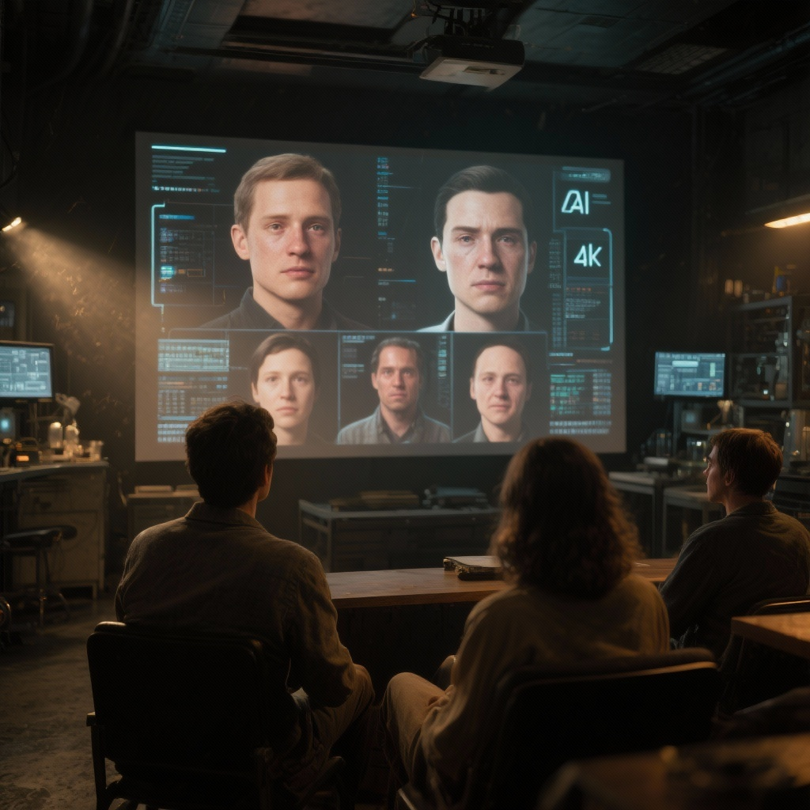
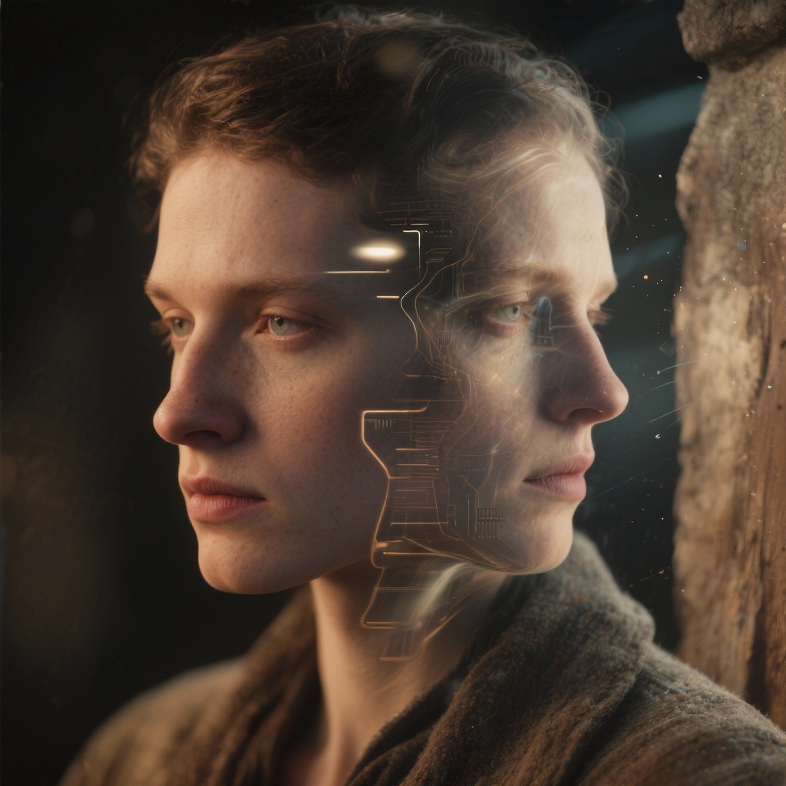
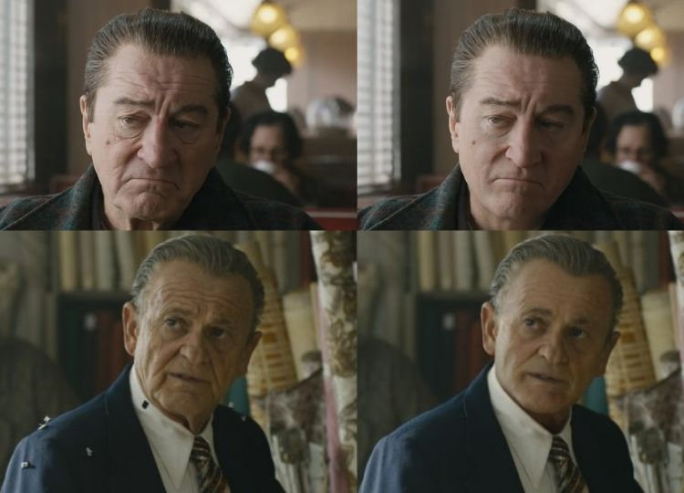
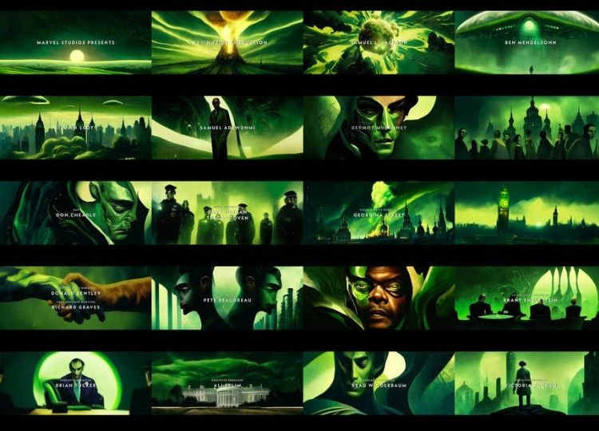

76
Films using AI-driven performances or digital actors
Loading
AI Cinema Lab is a creative research space exploring how artificial intelligence transforms cinema — from digital actors and deepfakes to emotional storytelling and perception. It’s a bridge between human creativity and machine vision, revealing the thin line between reality and simulation in modern film.
Digital Actors and Deepfakes:How Artificial Intelligence Is Changing Cinematic Performance


 About the Project
About the Project
AI Cinema Lab investigates how artificial intelligence, deepfakes, and digital actors are reshaping modern cinema. We explore how machine-generated performances affect emotion, presence, and authenticity on screen.
The goal is to raise media literacy and awareness — helping audiences understand how AI-driven performances influence perception and redefine what it means to “act” in the digital age.

The research focuses on audience perception — how viewers emotionally respond to AI-generated or digitally replaced actors. Do people feel empathy towards a synthetic face? Do they notice manipulation? How does trust shift when the performer is artificial?
By combining cinematic analysis, audience testing, and AI-generated scenes, we study the boundaries between reality, illusion, and machine presence in film.

A series of visual experiments demonstrate how AI and deepfake technologies alter cinematic performance. Using real footage and synthetic doubles, we analyze changes in emotion, timing, and viewer response.
The visuals include side-by-side comparisons, frame reconstructions, and full AI-generated short scenes — revealing the new aesthetics of digital acting.
Films using AI-driven performances or digital actors
Active AI tools for video and performance generation
Thematic Focus
Exploring how synthetic performers and digital doubles reshape acting, presence, and emotion in modern cinema — redefining what it means to perform on screen.

Investigating how deepfake technology transforms storytelling and challenges authorship, truth, and visual authenticity in film narratives.
Studying how audiences emotionally respond to AI-generated performances — questioning empathy, recognition, and realism in the age of synthetic cinema.
Reflecting on ethical implications and creative ownership in AI-driven filmmaking — where identity, consent, and authorship merge into digital ambiguity.

 AI in Cinema
AI in Cinema

Using advanced neural reconstruction, Scorsese’s team digitally rejuvenated actors without traditional makeup. The result raised questions about memory, identity, and the role of AI in preserving cinematic youth.
The first major studio series to feature a fully AI-generated intro. It blurred the line between creative collaboration and ethical controversy, challenging how we define artistic authorship.

The film digitally revived Peter Cushing, who had died in 1994, recreating his role as Grand Moff Tarkin using advanced facial capture, CGI modeling, and machine learning texture synthesis. This groundbreaking use of AI questioned where digital performance ends and human legacy begins.
 AI in Cinema
AI in Cinema
Artificial intelligence is reshaping how we perceive performance, authenticity, and emotion on screen. These questions invite reflection on the future of cinematic storytelling.
AI Tools Overview
Runway ML — one of the most widely used AI tools in the film industry. It enables the creation of cinematic scenes, smooth camera movements, and realistic VFX — all generated through machine learning, without heavy post-production.
Kaiber AI — transforms still images and concepts into moving cinematic sequences. Used by filmmakers and artists to generate music videos, surreal motion studies, and story-driven AI animations.
Synthesia — creates digital actors and realistic speech-driven performances. It’s used for producing deepfake-like character interactions and emotional dialogues entirely generated by AI — bridging ethics and storytelling.
Sora — OpenAI’s next-generation text-to-video model that can create full cinematic scenes directly from text prompts. It blurs the line between direction, performance, and machine-driven creativity — reshaping how films are made.